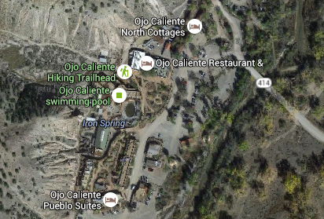
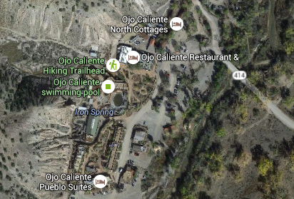

Joseph's Mine at Ojo Caliente


 

- Nov 10, 2013: Trailhead begins at the spa
- Nov 10, 2013: Uphill only at first
- Nov 10, 2013: Just atop the initial climb, a surprise
- Nov 10, 2013: Trail with a view
- Nov 10, 2013: Once on top, it's easy with a view
- Nov 10, 2013: Mica abounds at the mine site!
- Nov 10, 2013: From on top of the mine, great views
- https://www.flickr.com/photos/139088815@N08/26788961094/in/album-72157669097029026
- https://www.flickr.com/photos/139088815@N08/26788920384/in/album-72157669097029026
- https://www.flickr.com/photos/139088815@N08/27325744781/in/album-72157669097029026
- https://www.flickr.com/photos/139088815@N08/27121193820/in/album-72157669097029026
- https://www.flickr.com/photos/139088815@N08/26788978594/in/album-72157669097029026
- https://www.flickr.com/photos/139088815@N08/27396777885/in/album-72157669097029026
- https://www.flickr.com/photos/139088815@N08/26789811943/in/album-72157669097029026
Ojo Caliente offers not only wonderful hot springs soaking opportunities, but several hikes as well. Joseph's Mine is a fascinating hike into the hills with a fabulous view of the Sangre de Cristos, as well as an opportunity to gaze upon countless mica fragments and the remnants of an old mine. There is very little about the hike online, but New Mexico Outdoor has some useful information on the site. Imagine taking a nice hike and then soaking in a mineral hot springs afterwards! Ojo Caliente is located north of Espanola on US 285.